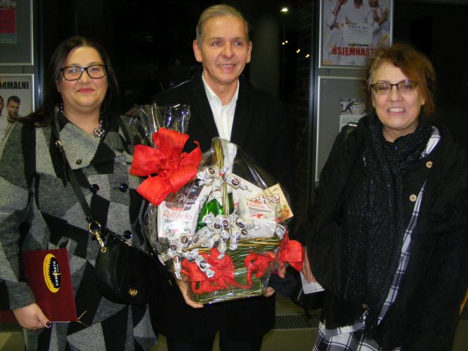

A tymczasem w Cameracie...
.
2022-11-19
Nasza delegacja idzie na Jubileusz.
19 listopada 2022 r. w Kampusie Wielickim miał miejsce Jubileusz 150-lecia nieprzerwanej działalności Towarzystwa Śpiewaczego Lutnia.Także Pani Jadwiga Szado świętowała 45-lecia prowadzenie tego najstarszego w Polsce zespołu. W tak ważnej dla całej społeczności wielickiej chwili nie mogło zabraknąć przedstawicieli Cameraty w osobach: Izabela Szota, Magdalena Thomas i Jan Thomas, którzy wraz z kwiatami złożyli życzenia kolejnych wspaniałych jubileuszy.


© Stowarzyszenie Muzyczne Chór Camerata Wieliczka
Prowadzenie strony oraz zdjęcia: Małgorzata Wysocka